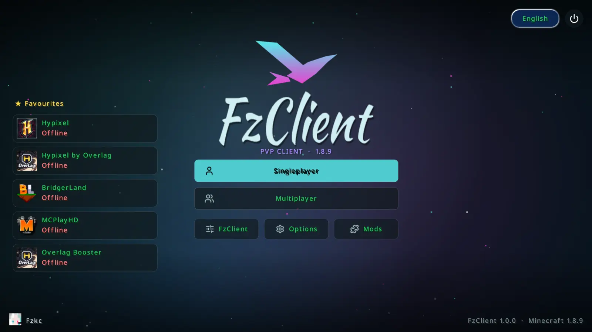
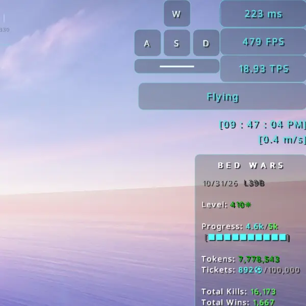
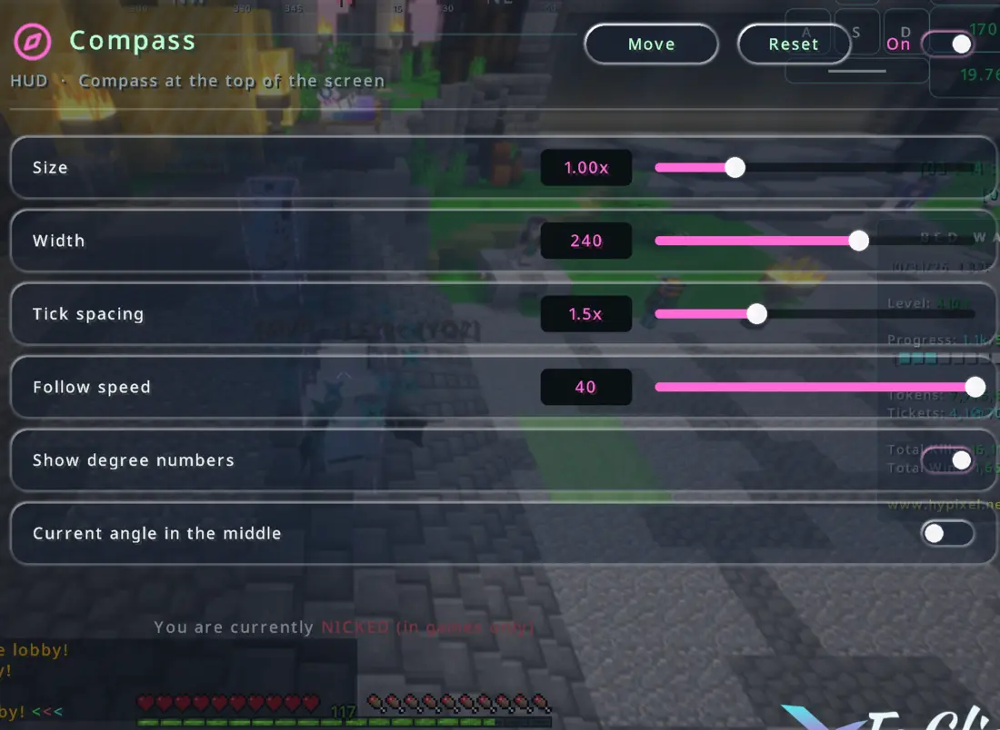
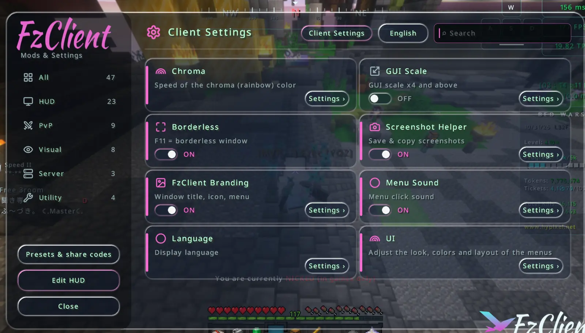
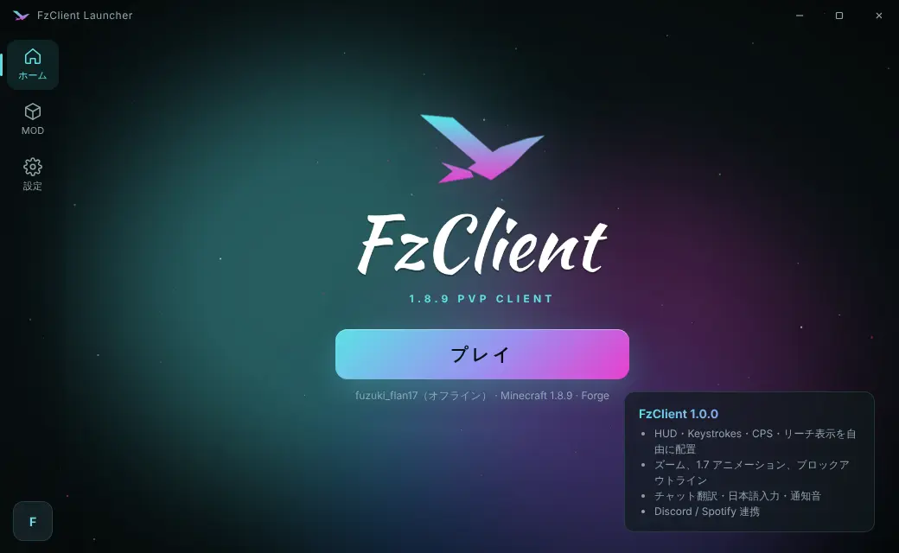

1.8.9 PvP,
your way.
FzClient is a PvP client for Minecraft 1.8.9 Forge. Move every HUD, make knockback look lighter, and save your best moments with the Alt+X overlay. Play through the FzClient Launcher and everything stays up to date by itself.

Everything you need, out of the box
No hunting for mods and stitching them together. The PvP essentials are already in, and every setting lives in one in-game menu.
Your info, right where you want it
Place Keystrokes, CPS, reach, FPS, ping and a compass anywhere on screen, and tune the size, colour and background of each one. The target HUD only shows up when your hit actually lands, and it catches bow hits too.
- Keystrokes
- CPS
- Reach
- Compass
- Target HUD
- Bed Wars stats


Knockback that looks lighter
When a hit knocks you back, FzClient can narrow your view for a split second, so the knockback looks smaller and your eyes stay on the fight. Only real knockback counts: fall damage, fire and poison leave your view alone. Set it anywhere from −30° to +30° and choose how long it lasts.
Make the menu look like yours
A title screen over a sepia panorama, with your favourite servers, cosmetics and newest screenshots one click away. In the settings, choose between Liquid Glass, Classic and Dashboard, put the categories where you like, and change the accent colour.
- Liquid Glass
- Classic
- Dashboard
- English / 日本語

Record without stopping
Press Alt+X on any server for the FzClient overlay. Record, or save the last moments as a clip right after something great happens. Keys can be combos like Ctrl + R.
Chat built for Hypixel
Split your chat into All, Party, Guild and DMs tabs, with chat heads and shortcuts. Scroll back through everything said since you started the game, up to 20,000 lines.
Translate and type Japanese
Translate foreign chat with one click or automatically, send a message in another language with /tr, and type Japanese with your IME right in the chat box.
A Bed Wars sidekick
In the waiting lobby, FzClient tells you when a party joins and how big it is. Drop Protection stops you from tossing anything except iron, gold, diamonds, emeralds and blocks.
Capes and auras
Wear an FzClient cape and an aura of hearts, flames, notes or snow. Other FzClient players see them too, and they vanish whenever you drink an invisibility potion.
Fullbright that works with shaders
Lights things up the way Night Vision does, so dark places stay visible even with a shader pack on. The classic gamma mode is still there if you prefer it.
Zoom and 1.7 animations
Smooth zoom, 1.7-style sword swings and blocking, hurt cam control, lower fire and a block outline in any colour. Fight with the old-school look.
Spot other FzClient players
Other FzClient players in your lobby get the bird icon next to their name tag and in the tab list. You choose whether to show yours.
Switch accounts in one click
Click the account icon on the title screen to swap between Microsoft and offline accounts. Your sign-ins are protected with Windows encryption.
No cheats. Ever.
FzClient adds things that help you see the game better, never things that give you an unfair edge.
- Invisible players stay invisible, and your crosshair doesn't change colour on them
- Cosmetics are never drawn on invisible players
- The target HUD only appears after you really deal damage
- No auto-replies or auto-answers in chat
One click to play
With the FzClient Launcher you never install Forge or mods by hand. Every time you press Play, it checks for a newer FzClient and swaps it in automatically. FzClient only runs when the launcher starts the game, and the launcher clears out its own leftover caches every time it opens.
- FzClient auto-updates
- Mods from Modrinth and CurseForge
- Auto-update your mods
- Alt+X overlay and recording
- Screenshot and clip gallery
- Microsoft sign-in

Start playing
- DownloadPress the download button. The installer (about 85 MB) saves straight to your Downloads folder.
- InstallOpen the exe and follow the steps. A shortcut appears on your desktop.
- Sign in and playSign in with your Microsoft account and press Play.
Requires Windows 10 / 11 (64-bit) and a Minecraft: Java Edition account